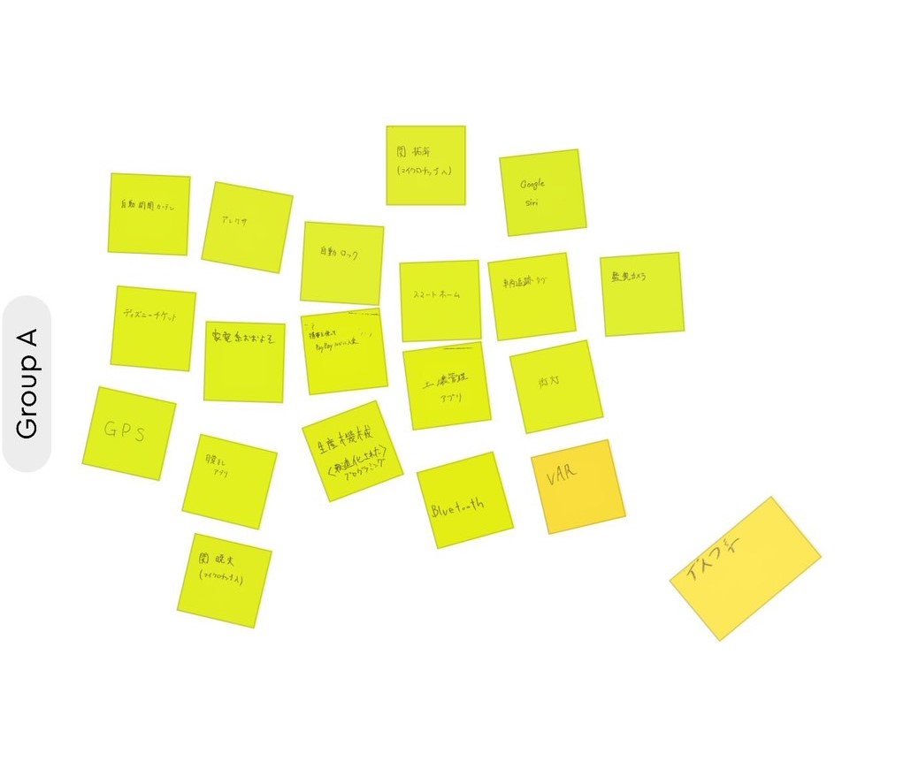

IoTについて考える
IoTとはなにか？
IoTは"Internet of Things"の略でモノのインターネットと訳されています。
IoT：Internet of Things（モノのインターネット）という言葉ができる以前、インターネットはコンピュータ同士を接続するためのものでした。
よって、従来は主にパソコンやサーバー等のIT関連機器が接続されていました。しかし、現在では新たにスマートフォンやタブレット端末も接続されています。
テレビやデジタルカメラ、デジタルレコーダーや最近話題のスマートスピーカー等のデジタル情報家電をインターネットに接続する流れは増加しています。
デジタル化された映像、音楽、音声、写真、文字情報や様々なデータがインターネットを介して伝達されるシーンが今後ますます増えて行くでしょう。
このように世界中に張り巡らされたインターネットはあらゆるモノがコミュニケーションをするための
情報伝送路
になりつつあります。
IoTで何ができそうか？
↓↓↓↓実際に班で話し合って出した案↓↓↓↓

IoTを使った製品のアイディア
スマホから遠隔でコンロのロックがかけられたら便利だなと考えました。この商品の良い点としては不具合やハッキング被害に遭ってもスマートロックなど
と違ってそれだけでは大事に至らない点だと考えます
~おまけ~ ChatGPTに聞いてみた
参考サイト(※下のURLは全て外部サイト)
IoTとは何か?｜IoT:Internet of Things（モノのインターネット）の意味
IoT とは？(Internet of Things - モノのインターネット)
ChatGPT